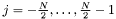
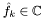
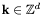
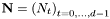
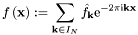

|
|
|
![\[ f_j= \sum_{k=-\frac{N}{2}}^{\frac{N}{2}-1} \hat{f}_{k} {\rm e}^{2\pi{\rm i}\frac{kj}{N}} \]](form_0.png)
for  and given complex coefficients . Using a divide and conquer approach, the number of floating point operations is reduced from  for a straightforward computation to only
for a straightforward computation to only  . In conjunction with publicly available efficient implementations the fast Fourier transform has become of great importance in scientific computing.
. In conjunction with publicly available efficient implementations the fast Fourier transform has become of great importance in scientific computing.
However, two shortcomings of traditional schemes are the need for equispaced sampling and the restriction to the system of complex exponential functions. The NFFT is a C subroutine library for computing the nonequispaced discrete Fourier transform (NDFT) and its generalisations in one or more dimensions, of arbitrary input size, and of complex data.
More precisely,we collect the possible frequencies  in the multi-index set
![\[ I_{\mathbf{N}} := \left\{ \mathbf{k}=\left(k_t\right)_{t=0,\hdots,d-1} \in \mathbb{Z}^d: - \frac{N_t}{2} \le k_t < \frac{N_t}{2} ,\;t=0,\hdots,d-1\right\}, *\]](form_6.png)
where  is the multibandlimit, i.e.,  . For a finite number of given Fourier coefficients
. For a finite number of given Fourier coefficients  ,
,  , we consider the fast evaluation of the trigonometric polynomial
, we consider the fast evaluation of the trigonometric polynomial

at given nonequispaced nodes  ,
,  , from the
, from the  -dimensional torus as well as the adjoint problem, the fast evaluation of sums of the form
-dimensional torus as well as the adjoint problem, the fast evaluation of sums of the form
![\[ \hat h_{\mathbf{k}} := \sum_{j=0}^{M-1} {f}_{j} {\rm e}^{2\pi{\rm i}\mathbf{k}\mathbf{ x}_j}. \]](form_15.png)
The generalisations of the NFFT include
Furthermore, we consider the inversion of the above transforms by iterative methods.